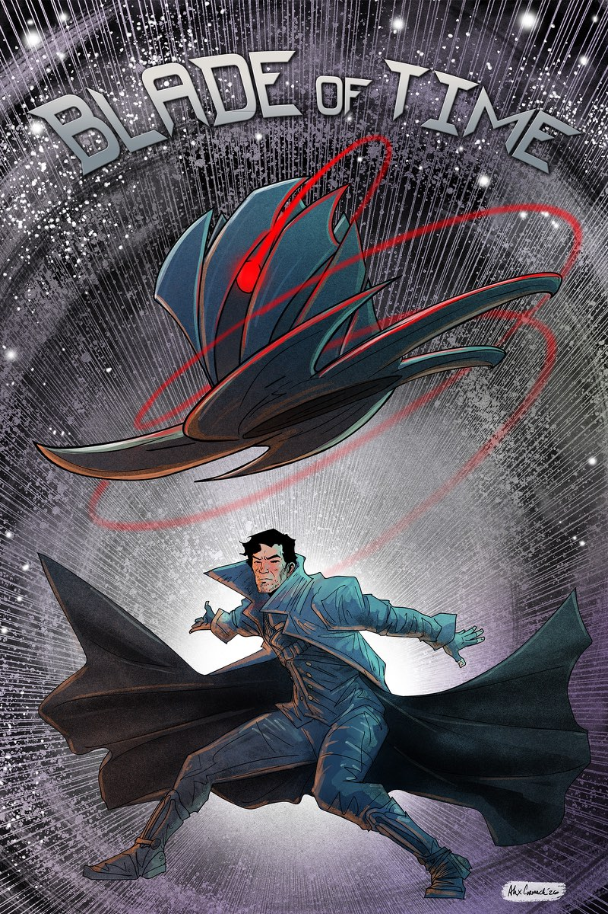
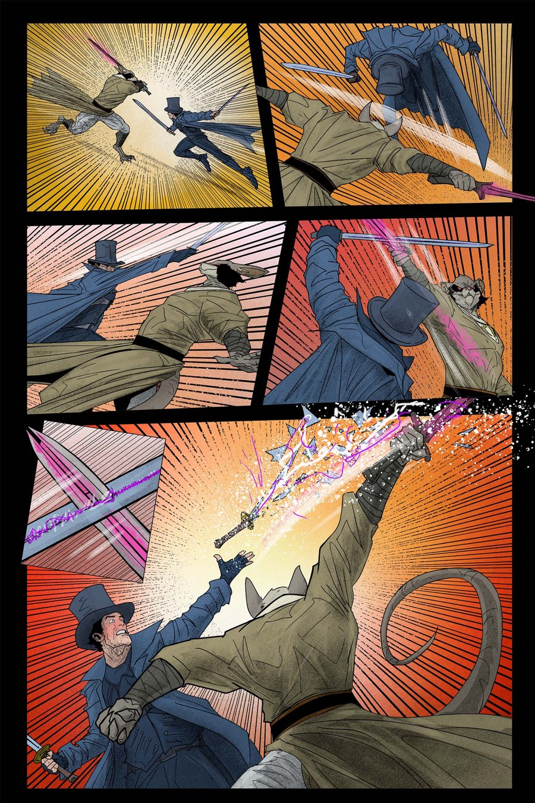

The Dormouse's consciousness no longer belongs to one timeline. As Hatter Madigan is pulled between past and present… every decision threatens to rewrite history.

When memory becomes a weapon…

The Dormouse's consciousness no longer belongs to one timeline. As Hatter Madigan is pulled between past and present… every decision threatens to rewrite history.
